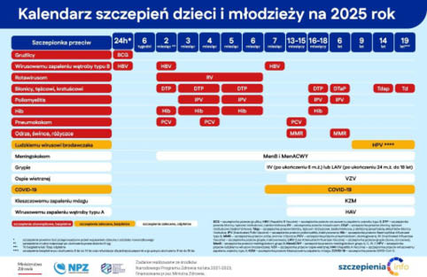

które szczepienia są obowiązkowe i jakie są zalecane dla poszczególnych grup wiekowych oraz zawodowych. Na przykład w 2025 r. obowiązkowe są szczepienia przeciwko gruźlicy, błonicy, tężcowi, krztuścowi, poliomyelitis, odrze, śwince, różyczce, WZW typu B i Haemophilus influenzae typu b – w określonych schematach zależnych od wieku dziecka i stanu zdrowia (rycina I.1.1).17
Badania przesiewowe są to masowe, rutynowe badania wykonywane u osób zdrowych, bez objawów choroby, w celu wczesnego zdiagnozowania potencjalnych zagrożeń zdrowotnych. Dzięki nim można wykryć np. nowotwory lub choroby układu krążenia na bardzo wczesnym etapie, zanim pojawią się objawy. Wczesna diagnoza pozwala na szybkie podjęcie leczenia, które jest zazwyczaj skuteczniejsze, mniej kosztowne i mniej obciążające dla pacjenta. Istotą screeningu jest zastosowanie prostych, czułych i dostępnych metod diagnostycznych w odniesieniu do dużych grup osób, które nie zgłaszają jeszcze żadnych objawów choroby.
Ministerstwo Zdrowia we współpracy z NFZ i jednostkami samorządu terytorialnego realizuje ogólnodostępne programy profilaktyczne, których celem jest wczesne wykrycie chorób oraz zmniejszenie ryzyka ich wystąpienia. Programy te są bezpłatne i dostępne bez skierowania, a ich lista publikowana jest na portalu ▸▸ pacjent.gov.pl.
Wybrane aktywne programy:
Rycina I.1.1.
Kalendarz szczepień
Źródło: Powiatowa Stacja Sanitarno-Epidemiologiczna w Krakowie. Kalendarz szczepień dzieci i młodzieży na 2025 rok. szczepienia.pzh.gov.pl/wp-content/uploads/2024/12/infografika_36-.jpg. Dostęp 13.10.2025.
WZW typu B – wirusowe zapalenie wątroby typu B
Zdrowie publiczne
21
